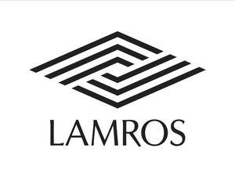

Trade Mark Journal No.2025/011 14 March 2025
UK00004168211 4 March 2025 (10,25,35)

- Class 10
- Socks for diabetics; Socks (Elasticated -) for medical purposes; Flight socks; Prosthetic socks for limbs; Socks for varicose veins.
- Class 25
- Socks; Socks and stockings; Slipper socks; Anklets [socks]; Toe socks; Ankle socks; Footless socks; Woollen socks; Trouser socks; Sweat-absorbent socks; Non-slip socks; Anti-perspirant socks; Bed socks; Thermal socks; Yoga socks; Men's socks; Tennis socks; Socks for men; Sports socks; Water socks; Pop socks; Inner socks for footwear; Sock suspenders; Men's dress socks; Knitted underwear; Knitted baby shoes; Bootees (woollen baby shoes); Knee-high stockings; Slippers; Knitted gloves; Babies' pants [underwear]; Socks for infants and toddlers; Knit shirts; Leggings [trousers]; Woollen tights; Tongues for shoes and boots; Pants; Stockings (Sweat-absorbent -); Sweat-absorbent stockings; Stockings [sweat-absorbent]; Underwear; Legwarmers; Boy shorts [underwear]; Stockings; Fleece shorts; Hosiery; Trousers shorts; Stockings (Heel pieces for -); Tights; Beanie hats; Underpants; Underwear (Anti-sweat -); Anti-sweat underwear; Nightwear; Sleepwear; Maternity sleepwear; Nightdresses; Pyjamas; Nighties; Nightgowns; Loungewear; Lingerie; Nightshirts; Maternity lingerie; Pajamas; Pyjamas [from tricot only]; Undergarments; Knitwear [clothing]; Knitwear; Casualwear; Swimwear; Men's clothing; Clothing for leisure wear; Dresses for evening wear; Evening dresses; Embroidered clothing; Clothing for infants; Clothing; Shoes for leisurewear; Heel pieces for stockings; Waterproof shoes; Hiking shoes; Sneakers [footwear]; Nappy pants [clothing]; Footwear soles; Soles for footwear; Waterproof pants; Snow pants; Knee warmers [clothing]; Fingerless gloves as clothing; Teddies [undergarments]; Teddies [underclothing]; Underclothes; Maternity underwear; Men's underwear; Underwear for women; Sleeping garments; Silk clothing; Knitted clothing; Functional underwear; Thermal underwear; Babies' undergarments; Woolen clothing.
- Class 35
- Retail services connected with the sale of clothing and clothing accessories.
Mohammad Jahangir Alam